Từ một cuộc gọi tư vấn đến buổi học đầu tiên
Tài liệu này đi theo đúng thứ tự một học sinh thật sẽ trải qua trong hệ thống CMCnew: từ lúc còn là một số điện thoại trong CRM, đến lúc đóng học phí, có tài khoản học tập riêng, và buổi học đầu tiên được ghi nhận đầy đủ — điểm danh, nhận xét, ảnh lớp — để phụ huynh nhìn thấy ngay trên điện thoại. Đọc từ trên xuống, theo đúng thứ tự các phòng ban sẽ thao tác.
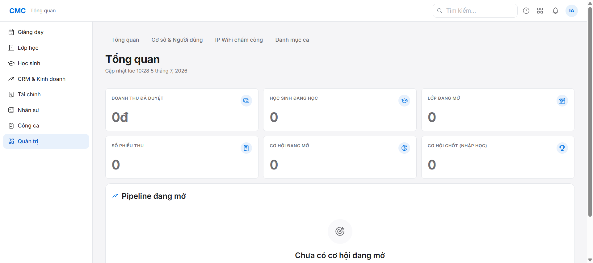
1. Tạo nhân sự (Nhân sự/Quản trị viên)
Việc đầu tiên: tạo tài khoản cho những người sẽ vận hành — giáo viên, nhân viên chăm sóc khách hàng, kế toán. Vào mục Quản trị → Cơ sở & Người dùng, bấm "Tạo người dùng".
- Điền email công ty, tên hiển thị, số điện thoại, email cá nhân.
- Điền hồ sơ tối thiểu: vị trí công việc, số CCCD, ngày vào làm.
- Chọn vai trò (có thể nhiều vai trò) và vai trò chính, chọn cơ sở làm việc.
- Lặp lại cho từng người: giáo viên, chăm sóc khách hàng, kế toán.
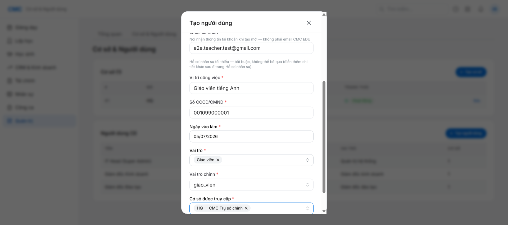
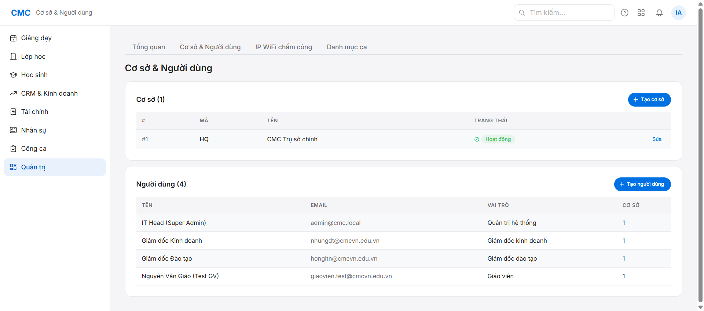
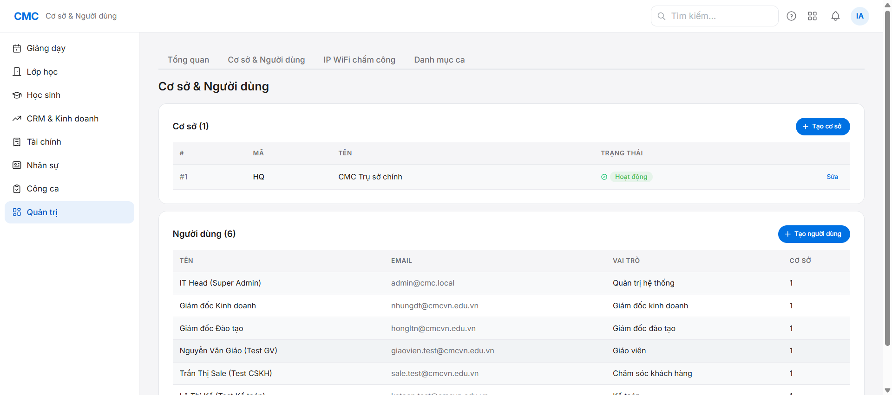
Cấp mật khẩu đăng nhập
Nhân viên thường đăng nhập bằng tài khoản Microsoft công ty. Nếu cần đăng nhập bằng mật khẩu riêng (ví dụ máy chưa cài SSO), vào trang hồ sơ chi tiết của người đó, bấm "Đặt lại mật khẩu".
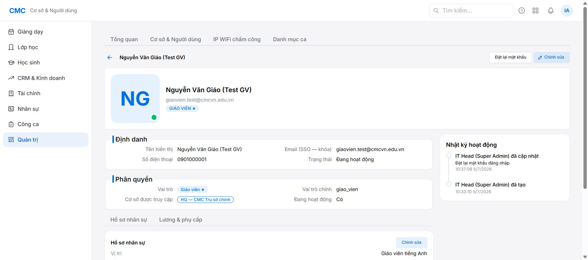
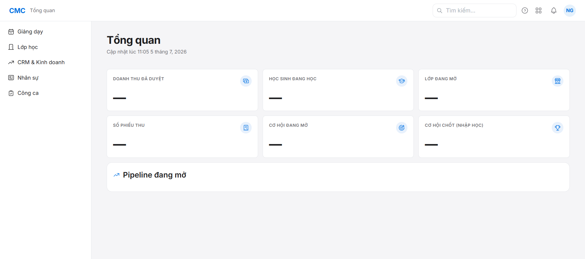
2. Tạo lớp học (Quản lý)
Vào mục Lớp học, bấm "+ Tạo lớp". Chọn đúng chương trình học (ví dụ "Bright I.G — Level C") — hệ thống tự hiện sẵn toàn bộ nội dung 16 buổi học đã soạn trước, không cần tự soạn giáo án.
- Chọn chương trình học (khung nội dung có sẵn).
- Nhập ngày khai giảng — ngày kết thúc tự tính theo số buổi của chương trình.
- Chọn khung giờ học trong tuần: thứ, giờ bắt đầu/kết thúc, giáo viên phụ trách.
- Bấm "Tạo lớp" — mã lớp tự sinh, không cần đặt tên tay.
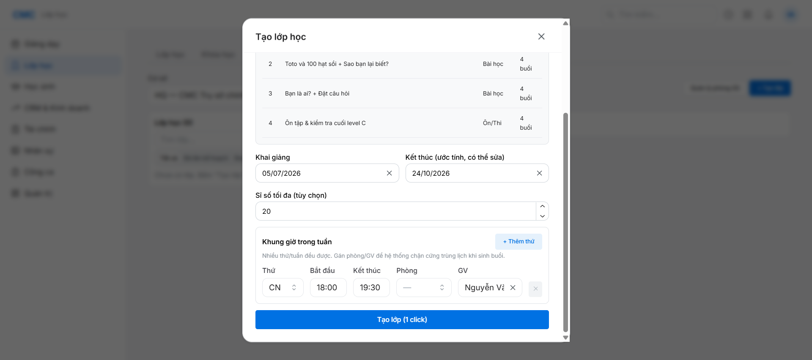
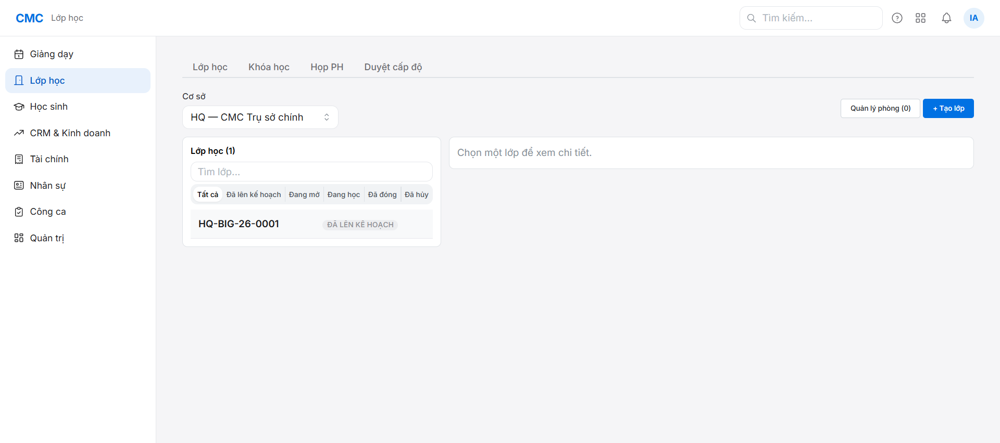
3. Sinh lịch học (Quản lý)
Lớp học mới tạo chưa có buổi học cụ thể nào. Vào tab "Lịch" của lớp, cuộn xuống mục "Sinh buổi học", điền khoảng ngày rồi bấm "Sinh lịch" — hệ thống tự tạo toàn bộ các buổi học theo đúng khung giờ tuần đã chọn.
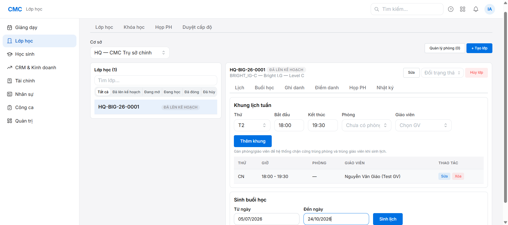
4. Tư vấn tuyển sinh (Sale / Chăm sóc khách hàng)
Đây là nơi câu chuyện của một học sinh thật sự bắt đầu — trước khi có bất kỳ hồ sơ học sinh nào, tất cả chỉ là một cơ hội trong CRM. Vào CRM & Kinh doanh → CRM, bấm "Tạo cơ hội", điền tên phụ huynh, số điện thoại, tên học sinh dự kiến.
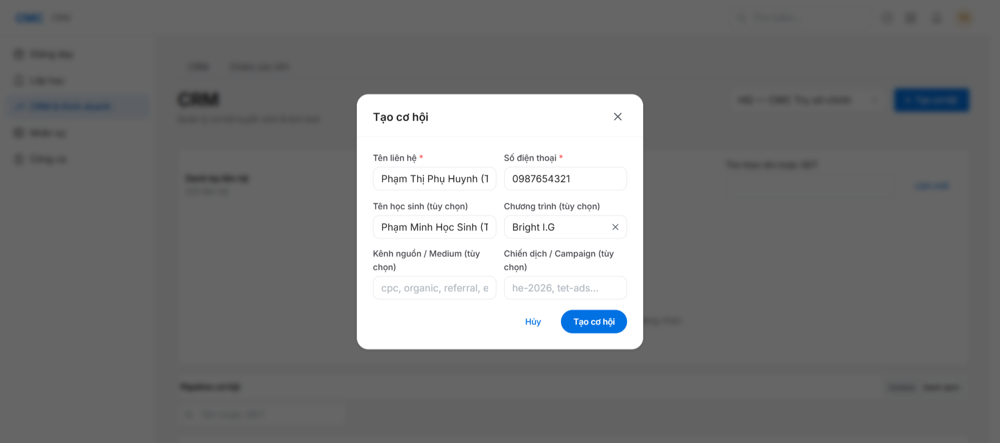
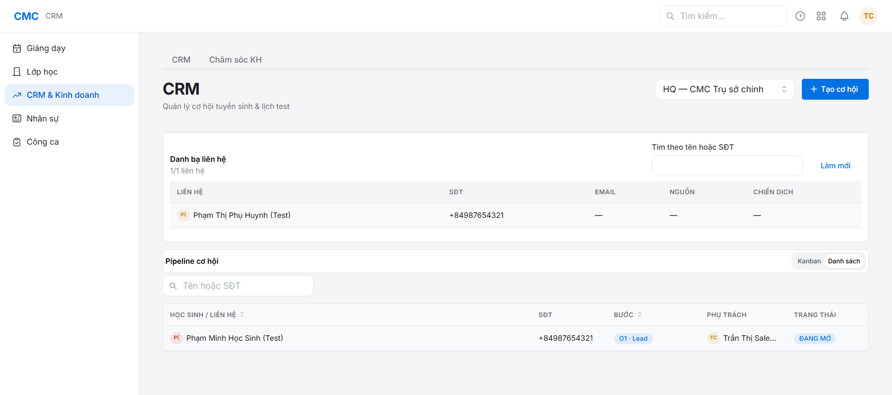
Sau mỗi lần liên hệ, tư vấn viên chuyển cơ hội qua từng bước: đã liên hệ → đặt lịch kiểm tra đầu vào → đã kiểm tra → nhập học. Mỗi lần chuyển bước đều được ghi lại trong nhật ký của cơ hội.
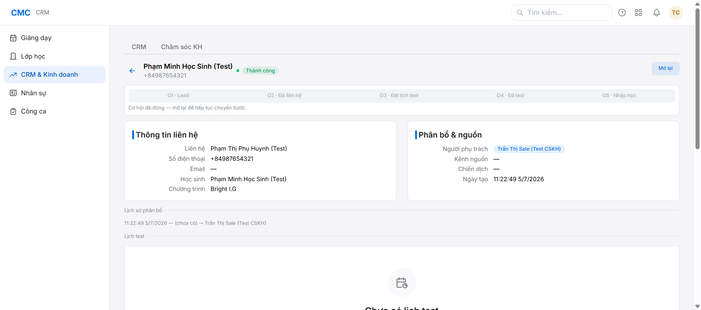
5. Lập phiếu thu và duyệt (Kế toán)
Đây là khoảnh khắc quan trọng nhất: học sinh chính thức "ra đời" trong hệ thống. Có 2 cách vào bước này — chọn đúng cách theo tình huống:
Đã có cơ hội trong CRM (nên dùng)
Mở đúng cơ hội vừa "Nhập học" ở bước 4, bấm "Lập phiếu thu" ngay trên trang đó. Hệ thống tự điền sẵn tên phụ huynh, số điện thoại, tên học sinh từ đúng hồ sơ CRM — không phải gõ tay lại, tránh gõ sai/gõ trùng.
Khách vãng lai, chưa qua CRM
Vào mục Tài chính, chọn "Học sinh mới", tự điền số điện thoại phụ huynh, tên học sinh. Chỉ dùng cách này khi thật sự chưa có cơ hội CRM cho khách này.
Ở cả 2 cách, tiếp tục chọn khóa học và lớp đã tạo ở bước 2, rồi bấm "Tạo phiếu nháp".
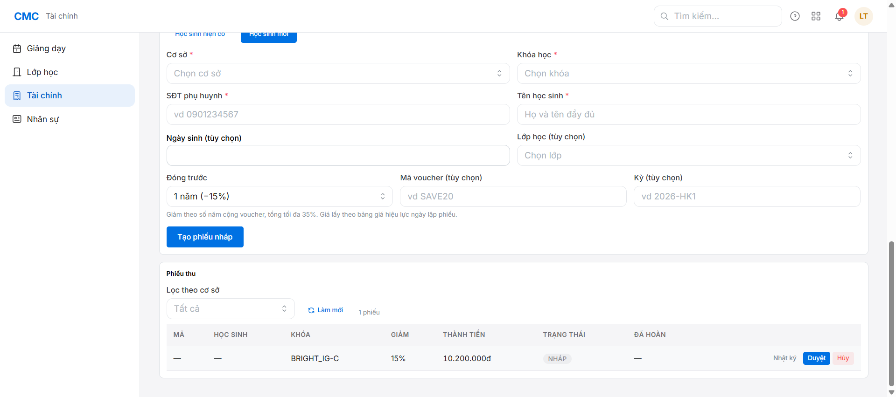
Bấm "Duyệt". Vì học sinh này mới, hệ thống hỏi thêm email phụ huynh (để phụ huynh có thể vào cổng học tập sau này) — điền vào rồi xác nhận.
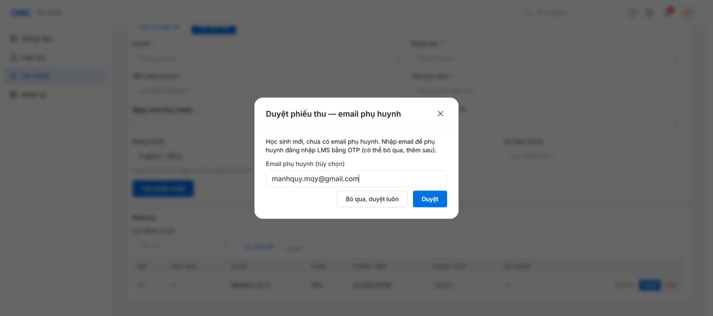
Ngay khi bấm xác nhận, hệ thống tự động và đồng thời:
- Tạo hồ sơ học sinh chính thức.
- Tạo tài khoản phụ huynh gắn với số điện thoại và email vừa nhập.
- Ghi danh học sinh vào đúng lớp đã chọn.
- Cấp một tài khoản học tập (cổng LMS) riêng cho học sinh, kèm mã đăng nhập và mật khẩu tạm.
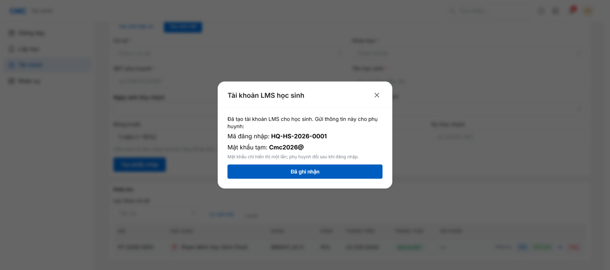
6. Hệ thống báo tin cho phụ huynh
Ngay sau khi phiếu thu được duyệt, hệ thống tự động gửi một email cho phụ huynh, thông báo tài khoản học tập của con đã sẵn sàng, kèm hướng dẫn đăng nhập. Phụ huynh không cần làm gì ở bước này ngoài việc kiểm tra hộp thư.
7. Phụ huynh vào cổng học tập
Phụ huynh mở cổng học tập, chọn vai "Phụ huynh", nhập email đã đăng ký.
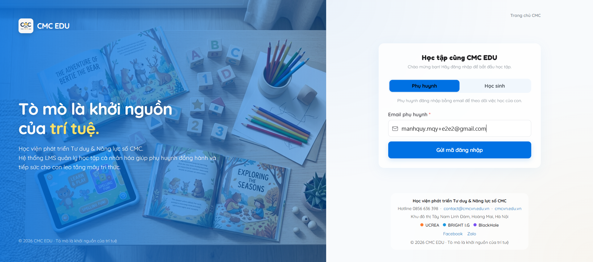
Hệ thống gửi một mã xác thực gồm 6 chữ số về email vừa nhập. Phụ huynh nhập đúng mã đó để hoàn tất đăng nhập — không cần nhớ mật khẩu.
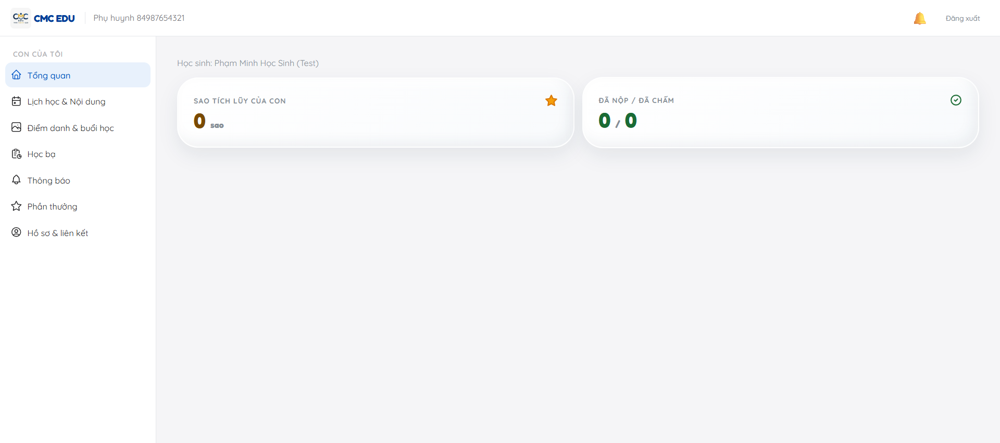
Trong mục "Lịch học & Nội dung", phụ huynh thấy toàn bộ các buổi học sắp tới của con, kèm tên bài học và mục tiêu tư duy của từng buổi — lấy sẵn từ chương trình học đã chọn ở bước 2, giáo viên không cần soạn lại.
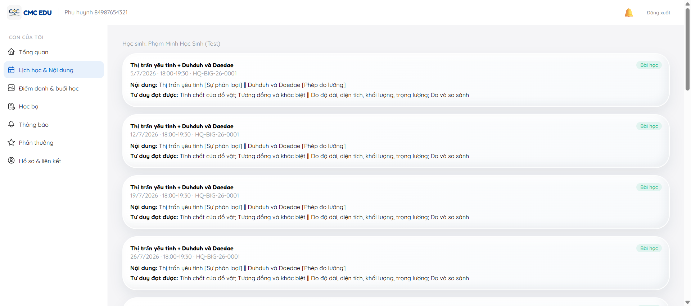
8. Ngày lên lớp (Giáo viên)
Đến ngày học, giáo viên vào Lịch dạy, chọn đúng buổi học, làm 3 việc theo thứ tự: điểm danh, nhận xét học sinh, và đăng ảnh buổi học. Lưu ý: mục điểm danh chỉ mở ra trong khoảng 15 phút trước giờ học, còn mục nhận xét/ảnh chỉ mở sau khi buổi học kết thúc — đúng theo tiến trình thời gian thật của một buổi học.
Điểm danh
Đánh dấu từng học sinh: có mặt, đi muộn, hoặc vắng.
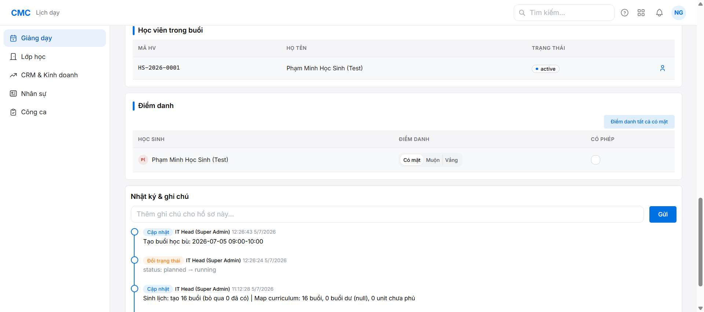
Nhận xét học sinh
Với mỗi học sinh, chọn nhanh mức độ tham gia, điểm mạnh, điểm cần rèn từ danh sách có sẵn, và có thể viết thêm ghi chú tự do.
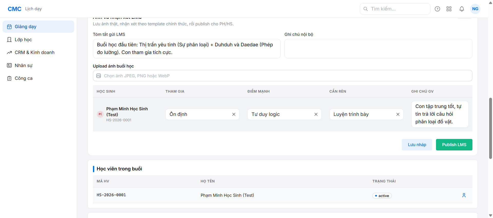
Đăng ảnh buổi học
Chọn ảnh chụp trong buổi học (JPEG/PNG/WebP) để đăng kèm.
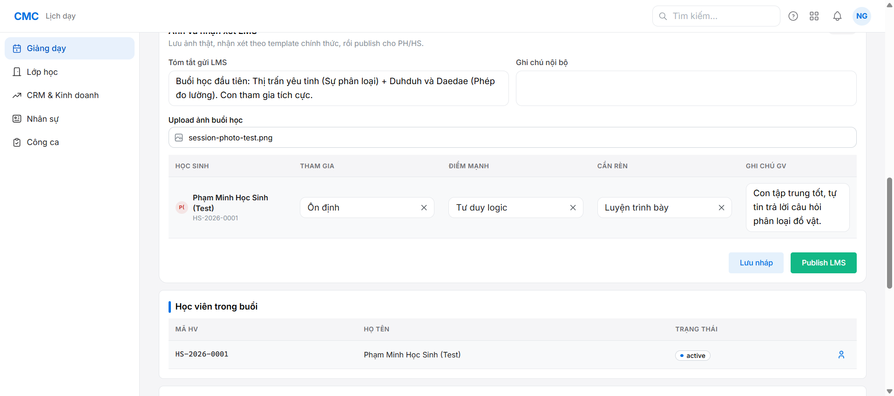
Xuất bản lên cổng học tập
Sau khi điền đủ tóm tắt buổi học, bấm "Publish LMS" — nhận xét và ảnh sẽ hiển thị ngay cho phụ huynh, không cần đợi thêm bước duyệt nào khác.
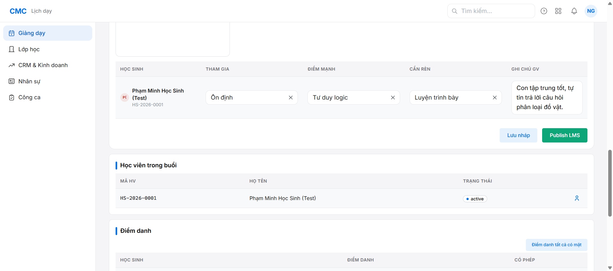
Kết quả: phụ huynh thấy ngay
Phụ huynh mở lại cổng học tập, vào mục "Điểm danh & buổi học" — thấy đầy đủ: buổi học đã có mặt, tóm tắt buổi học, nhận xét chi tiết, và ảnh lớp thật.
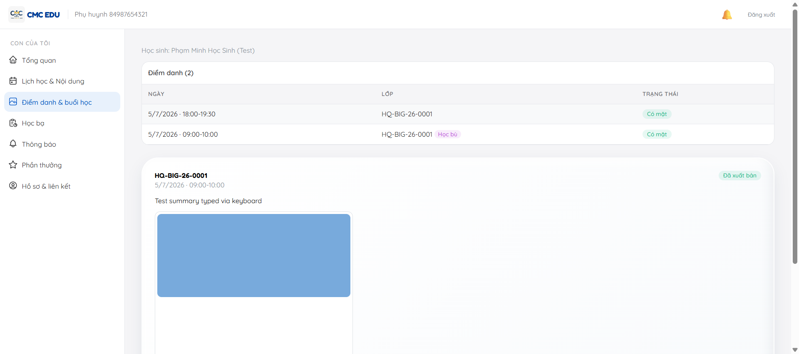
Tổng kết: một vòng đời, nhiều vai trò
| Bước | Ai làm | Việc chính |
|---|---|---|
| 1 | Nhân sự | Tạo tài khoản cho giáo viên, sale/CSKH, kế toán |
| 2-3 | Quản lý | Tạo lớp học, sinh lịch các buổi học |
| 4 | Sale/CSKH | Tư vấn tuyển sinh, đưa khách từ liên hệ đến "nhập học" |
| 5 | Kế toán | Thu tiền, duyệt phiếu — học sinh và tài khoản học tập được tạo |
| 6 | Hệ thống | Tự động báo tin cho phụ huynh qua email |
| 7 | Phụ huynh | Vào cổng học tập, xem lịch học của con |
| 8 | Giáo viên | Dạy, điểm danh, nhận xét, đăng ảnh — phụ huynh thấy ngay |